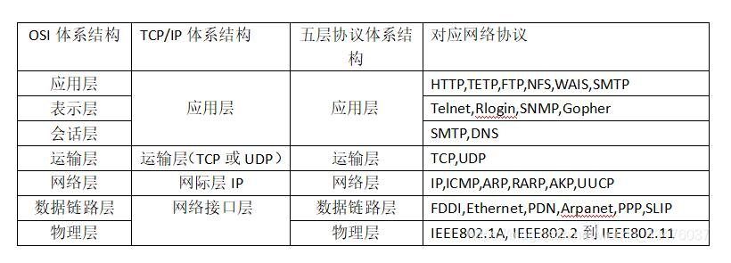

第一章：概述
- 名词解释
-
TCP/IP：Transmission Control Protocol/Internet Protocol——传输控制协议/网际协议，
能够在多个不同网络间实现信息传输的协议簇，是网络中使用的最基本的协议
-
ISP：Internet Service Provider——互联网服务提供者，即向广大用户综合提供互联网接入业务、信息业务和增值业务的电信运营商
-
RFC：Request For Comments——请求评论，包含了关于Internet的几乎所有重要的文字资料
-
C/S：Client-Server——客户-服务器方式，进程之间服务和被服务的关系，客户是服务请求方，服务器是服务提供方
-
P2P：peer-to-peer——对等连接，两台主机并不区分哪一个是服务请求方哪一个是服务提供方，
每一台主机既是客户同时又是服务器
-
PDU：Protocol Data Unit——协议数据单元，对等层实体进行信息交换的数据单位
-
SDU：Service Data Unit——服务数据单元，指定层的用户服务的数据集，传送到接收方的时候同一协议层时数据没有发生变化
-
SAP：Service Access Ponit——服务访问点，在同一系统中相邻两层的实体进行交互（即交换信息）的地方
- 三种交换
-
电路交换
-
建立连接->通话->释放连接，在通话的全部时间内，通话的两个用户始终占用端到端的通信资源，
整个报文的比特流连续地从源点直达终点
-
优点：实时性强，不存在失序问题，端对端通信质量因约定了通信资源获得可靠保障，对连续传送大量数据效率高
-
缺点：平均连接建立时间对计算机通信来说嫌长，信道利用率低，难以在通信过程中进行差错控制
-
报文交换
-
整个报文先传送到相邻结点，全部存储下来后查找转发表，转发到下一个结点，
以报文为数据交换的单位，报文携带有目标地址、源地址等信息，在交换结点采用存储转发的传输方式
-
优点：无须预约传输带宽，不存在连接建立时延，动态逐段利用传输带宽对突发式数据通信效率高，通信迅速，传输可靠性高，通信线路利用率高
-
缺点：实时性差，只适用于数字信号
-
分组交换
-
单个分组传送到相邻结点，存储下来后查找转发表，转发到下一个节点
-
优点：高效（在分组传输过程中动态分配传输宽带，对通信链路是逐段占用）；灵活（为每一个分组独立的选择最合适的转发路由）；
迅速（以分组作为传送单位，可以不先建立连接就能向其他主机发送分组）；可靠（保证可靠性的网络协议，分布式多路由的分组交换网，使网络有很好的生存性）
-
缺点：分组在各路由器存储转发时需要排队，造成一定时延；各分组必须携带的控制信息造成了一定的开销，整个分组交换网还需要专门的管理和控制机制
- Internet最基本工作原理
-
当一个Internet用户给其他机器发送一个文本时，TCP将该文本分解成若干个小数据包，再加上一些特定的信息，以便接收方的机器可以判断传输是正确无误的，
由IP在数据包上标上有关地址信息。连续不断的TCP/IP数据包可以经由不同的路由到达同一个地点。路由器决定数据包的最佳传输途径，以便有效的分散Internet的各种业务量载荷，避免系统某一部分过于繁忙而发生“堵塞”。
当TCP/IP数据包到达目的地后，计算机将去掉TP的地址标志，检查数据在传输过程中是否有损失，在此基础上并将各数据包重新组合成原文本文件。如果接收方发现有损坏的数据包，则要求发送端重新发送被损坏的数据包。
- 计算机网络的体系结构
- 
第二章：物理层
- 物理层的功能
-
解决0,1的传输
-
透明地传送比特流，在两个相邻系统之间唯一地标识数据电路，物理层应该解决物理连接的建立、维持和释放问题
- 基本概念
-
数据:是运送信息的实体
-
信号：则是数据的电气的或电磁的表现
-
模拟数据：运送信息的模拟信号
-
模拟信号:连续变化的信号
-
数字信号:取值为有限的几个离散值的信号
-
单工:即只有一个方向的通信而没有反方向的交互
-
半双工：即通信和双方都可以发送信息，但不能双方同时发送或接收。这种通信方式是一方发送另一方接收，过一段时间再反过来
-
全双工：即通信的双方可以同时发送和接收信
-
基带信号：来自信源的信号
-
带通信号：把基带信号经过载波调制后，把信号的频率范围搬移到较高的频段以便在信道中传输（即仅在一段频率范围内能够通过信道
-
码元 ：在使用时间域的波形表示数字信号时，代表不同离散数值的基本波形
第三章：数据链路层
- 数据链路层的功能
-
提供点到点的链路：为主机/路由器等相邻结点之间提供通过公共或本地介质(或信道)进行（可靠、有效）数据帧传输服务
-
功能包括
-
链路管理：控制对物理介质（或信道）的访问
-
封装：为传输网络层数据包准备数据（成帧）
-
传输数据： 控制通过物理介质（或信道）的数据（帧）传输
-
帧同步
-
差错控制
-
流量控制
-
链路管理
- 要解决的三个问题
-
封装成帧
-
透明传输
-
差错控制
- 交换机/网桥工作原理
-
1.交换机根据收到数据帧中的源MAC地址建立该地址同交换机端口的映射，并将其写入MAC地址表中
-
2.交换机将数据帧中的目的MAC地址同已建立的MAC地址表进行比较，以决定由哪个端口进行转发。
-
3.如数据帧中的目的MAC地址不在MAC地址表中，则向所有端口转发。这一过程称为泛洪（flood）
-
4.广播帧和组播帧向所有的端口转发
第四章：网络层
- 英文缩写
-
ARP：Address Resolution Protocol——地址解析协议，根据IP地址获取物理地址的一个TCP/IP协议
-
RARP：Reverse Address Resolution Protocol——反向地址转换协议，允许局域网的物理机器从网关服务器的 ARP 表或者缓存上请求其 IP 地址
-
BGP：Border Gateway Protocol—— 边界网关协议，运行于 TCP 上的一种自治系统的路由协议
-
IGMP：Internet Group Management Protocol——网际组管理协议，因特网协议家族中的一个组播协议。该协议运行在主机和组播路由器之间
-
ICMP：Internet Control Message Protocol——网际控制报文协议，是TCP/IP协议簇的一个子协议，用于在IP主机、路由器之间传递控制消息
-
RIP:Routing Information Protocol——路由信息协议,基于距离矢量算法的路由协议，利用跳数来作为计量标准
-
OSPF:Open Shortest Path First——开放式最短路径优先,一种典型的链路状态（Link-state）的路由协议
-
CIDR:Classless Inter-Domain Routing—— 无分类域间路由选择,一个用于给用户分配IP地址以及在互联网上有效地路由IP数据包的对IP地址进行归类的方法
-
VLSM:Variable Length Subnet Mask——变长子网掩码,是为了有效的使用无类别域间路由（CIDR）和路由汇聚(route summary)来控制路由表的大小
-
VPN:Virtual Private Network——虚拟专用网络,在公用网络上建立专用网络，进行加密通讯
-
TCP:Transmission Control Protocol——传输控制协议,一种面向连接的、可靠的、基于字节流的传输层通信协议
-
UDP:User Datagram Protocol——用户数据报协议,一种无需建立连接就可以发送封装的 IP 数据报的方法
-
NAT:Network Address Translation——网络地址转换,在专用网内部的一些主机本来已经分配到了本地IP地址（即仅在本专用网内使用的专用地址），但现在又想和因特网上的主机通信（并不需要加密）时，可使用NAT方法
- 分类的IP怎么转发的
-
(1)从数据报的首部提取目的主机的 IP 地址 D, 得出目的网络地址为 N
-
(2)若网络 N 与此路由器直接相连，则把数据报直接交付目的主机 D；否则是间接交付，执行(3)
-
(3)若路由表中有目的地址为 D 的特定主机路由，则把数据报传送给路由表中所指明的下一跳路由器；否则，执行(4)
-
(4)若路由表中有到达网络 N 的路由，则把数据报传送给路由表指明的下一跳路由器；否则，执行(5)
-
(5) 若路由表中有一个默认路由，则把数据报传送给路由表中所指明的默认路由器；否则，执行(6)
-
(6) 报告转发分组出错
第五章：运输层
- TCP和UDP的比较
-
UDP
-
传送数据之前不需要先建立连接
-
尽最大努力交付，即不保证可靠交付，同时也不使用拥塞控制
-
虽然不提供可靠交付，但在某些情况下 UDP 是一种最有效的工作方式
-
面向报文的，没有拥塞控制，很适合多媒体通信的要求
-
有较好的实时性，工作效率高，适用于对高速传输和实时性有较高的通信或广播通信
-
支持一对一，一对多，多对一的交互通信
-
对系统资源要求较少，首部开销小，只有8个字节
-
TCP
-
提供面向连接的服务
-
不提供广播或多播服务
-
由于 TCP 要提供可靠的、面向连接的运输服务，因此不可避免地增加了许多的开销。
这不仅使协议数据单元的首部增大很多，还要占用许多的处理机资源
-
TCP通过校验和，重传控制，序号标识，滑动窗口、确认应答实现可靠传输。如丢包时的重发控制，
还可以对次序乱掉的分包进行顺序控制
-
TCP 提供全双工通信
-
面向字节流
- 三次握手
-
(1)Client将标志位SYN置为1，随机产生一个值并将该数据包发送给Server，Client等待Server确认
-
2)Server收到数据包后由标志位SYN=1知道Client请求建立连接，Server将标志位SYN和ACK都置为1，ack=J+1，随机产生一个值seq=K，
并将该数据包发送给Client以确认连接请求，Server进入SYN_RCVD状态。
-
3)Client收到确认后，检查ack是否为J+1，ACK是否为1，如果正确则将标志位ACK置为1，ack=K+1，并将该数据包发送给Server，Server检查ack是否为K+1，ACK是否为1，如果正确则连接建立成功，
Client和Server进入ESTABLISHED状态，完成三次握手，随后Client与Server之间可以开始传输数据了
- 四次挥手
-
1)Client发送一个FIN，用来关闭Client到Server的数据传送，Client进入FIN_WAIT_1状态
-
2)Server收到FIN后，发送一个ACK给Client，确认序号为收到序号+1（与SYN相同，一个FIN占用一个序号），Server进入CLOSE_WAIT状态。此时TCP链接处于半关闭状态，即客户端已经没有要发送的数据了，
但服务端若发送数据，则客户端仍要接收。
-
3)Server发送一个FIN，用来关闭Server到Client的数据传送，Server进入LAST_ACK状态
-
4)Client收到FIN后，Client进入TIME_WAIT状态，接着发送一个ACK给Server，确认序号为收到序号+1，Server进入CLOSED状态，完成四次挥手。
- TCP的拥塞处理
-
1)慢启动：由小到大逐渐增加拥塞窗口的大小
-
2)拥塞避免：拥塞避免算法让拥塞窗口缓慢增长，即每经过一个往返时间RTT就把发送方的拥塞窗口cwnd加1，而不是加倍，
这样拥塞窗口按线性规律缓慢增长
-
3)快重传：快重传要求接收方在收到一个 失序的报文段 后就立即发出 重复确认而不要等到自己发送数据时捎带确认。快重传算法规定，发送方只要一连收到三个重复确认就应当立即重传对方尚未收到的报文段，
而不必继续等待设置的重传计时器时间到期
-
4)快恢复：快重传配合使用的还有快恢复算法，当发送方连续收到三个重复确认时，就执行“乘法减小”算法，把ssthresh门限减半，但是接下去并不执行慢开始算法：因为如果网络出现拥塞的话就不会收到好几个重复的确认，
所以发送方现在认为网络可能没有出现拥塞。所以此时不执行慢开始算法，而是将cwnd设置为ssthresh的大小，然后执行拥塞避免算法
第六章：应用层
知识框架

- 七大协议
-
域名系统(Domain Name System，DNS)：用于实现网络设备名字到IP地址映射的网络服务
-
文件传输协议(File Transfer Protocol，FTP)：用于实现交互式文件传输功能
-
简单邮件传送协议(Simple Mail Transfer Protocol, SMTP)：用于实现电子邮箱传送功能
-
动态主机配置协议(DHCP)：由服务器控制一段lP地址范围，客户机登录服务器时就可以自动获得服务器分配的lP地址和子网掩码
-
超文本传输协议(HyperText Transfer Protocol，HTTP)：用于实现WWW服务
-
简单网络管理协议(simple Network Management Protocol，SNMP)：用于管理与监视网络设备
-
远程终端协议(Telnet)：用于实现远程登录功能